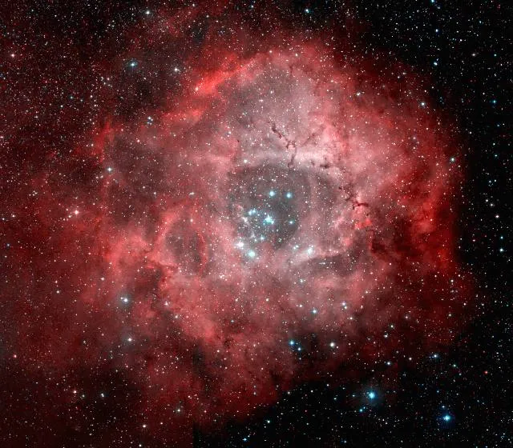

오늘의 천체 · MONOCEROS
NGC 2237 로제트 성운

약 5,000광년 떨어진 별 탄생 영역입니다. 중심의 젊고 뜨거운 별무리 NGC 2244의 빛과 항성풍이 주변 가스와 먼지 구름을 빚어내고 있습니다.
설명 출처: NASA APOD오늘의 천체 · MONOCEROS

약 5,000광년 떨어진 별 탄생 영역입니다. 중심의 젊고 뜨거운 별무리 NGC 2244의 빛과 항성풍이 주변 가스와 먼지 구름을 빚어내고 있습니다.
설명 출처: NASA APOD